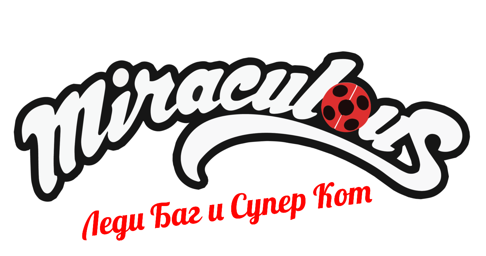
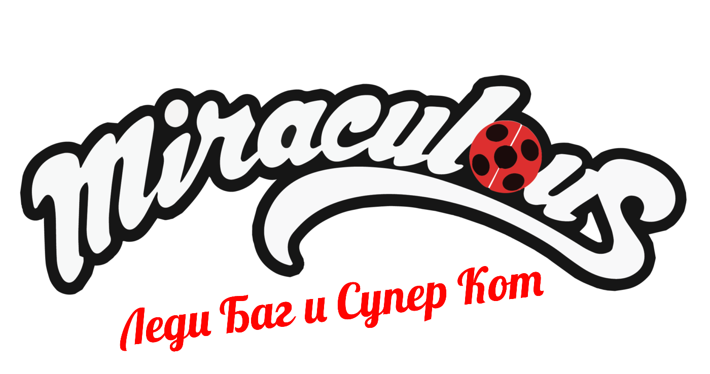
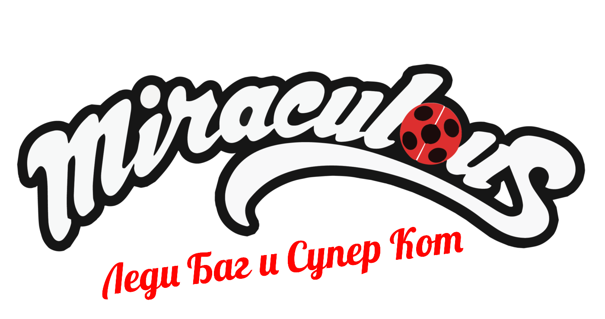
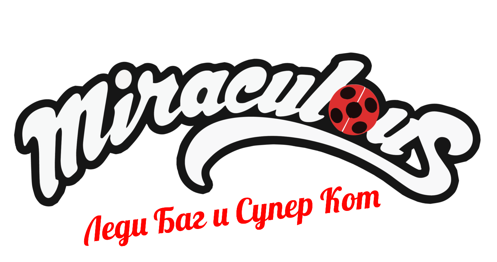

 
Бражник (фр. Le Papillon) — главный антагонист мультсериала, главный злодей, обладающий силой, способной создавать новых суперзлодеев с помощью акум — бабочек, которых он портит своей тёмной энергией. Он охотится на людей, подверженных негативным эмоциям, таким как страх, печаль, гнев или ревность. Взамен на то, что он даёт шанс своим жертвам отомстить обидчикам, Бражник просит их украсть талисманы Леди Баг и Супер-Кота. Он также обладает талисманом — Камнем Моли. В первой серии второго сезона выясняется, что Бражник — это отец Адриана, Габриэль Агрест, который с помощью талисманов Леди Баг и Супер-Кота хочет воскресить свою жену Эмили. Также Габриель Агрест был не только Бражником, но и Алым Бражником в серии "Катализатор", Мотыльком в 4 сезоне и Собирателем. Также в серии "Недолговечный" ему удалось заполучить талисман Супер Кота и использовать его для своих целей.
Деятельность: |
Пол: |
Модельер Суперзлодей |
Мужской |
Отношения: |
|
Друзья: |
Враги: |
Натали Санкёр Лайла Росси Сенти Габриель |
Леди Баг Супер Кот Супергерои |
Увлечения: |
|
Любит: |
Не любит: |
Эмили Агрест |
Супер герои |